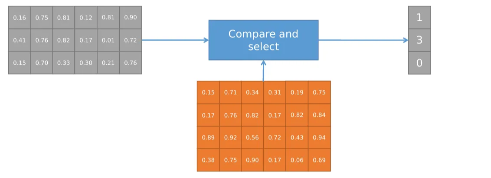

VQ-VAE
learn discrete representations of data
- It is particularly useful for applications where discrete or categorical representations are beneficial
{kind=link}
Unlike a standard VAE, the encoder in VQ-VAE does not output continuous values in the latent space
- Instead, it outputs discrete codes that correspond to specific entries in a codebook.
- codebook with the latent space dimension and the number of codewords
- The continous output of the encoder is reshaped into , with:
- number of desired latent codes, each of dimension
{kind=link}
- Each row of this matrix is compared with the rows of , the output is the index of the closest one, thus a vector

like with L2 norm 
{kind=link}
The decoder is responsible for generating data samples from discrete codes produced by the encoder and codebook
- It takes these discrete codes, looks up corresponding entries in the codebook, and maps them back to the original data space to reconstruct or generate data points


- Reconstruction loss
- Trains the model (encoder and decoder) to minimize the discrepancy between the original input data and the reconstructed output data, encouraging the model to learn a meaningful and faithful representation of the input in the latent space.
loss_recon = MSE(decoder(q_trick), input)q_trick = (q-x).detach() + x
- Trains the model (encoder and decoder) to minimize the discrepancy between the original input data and the reconstructed output data, encouraging the model to learn a meaningful and faithful representation of the input in the latent space.
- Codebook loss
- Trains the codebook to have vectors closer to the ones produced by the encoder, promoting the creation of a codebook that captures the essential information in the data and encourages the model to utilize the codebook entries effectively during the quantization proces
loss_codebook = MSE(q, x.detach())
- Trains the codebook to have vectors closer to the ones produced by the encoder, promoting the creation of a codebook that captures the essential information in the data and encourages the model to utilize the codebook entries effectively during the quantization proces
- Commitment loss
- Trains the encoder to produce vectors closer to the ones in the codebook, ensuring that each data point's latent representation is strongly associated with a single codebook entry, thus improving the efficiency of the learned representations.
loss_commit = MSE(x, q.detach())
- Trains the encoder to produce vectors closer to the ones in the codebook, ensuring that each data point's latent representation is strongly associated with a single codebook entry, thus improving the efficiency of the learned representations.
Exist a library that has some things implemented, like the
Useful for compression with a shared codebook